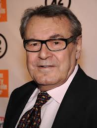

El recorrido artístico de Amadeus se caracteriza por la fusión entre teatro, cine y música para construir una versión dramatizada de la vida de Wolfgang Amadeus Mozart.
Dirigida por Miloš Forman y basada en la obra teatral de Peter Shaffer, la película conserva una estructura muy teatral, ya que gran parte del relato es la confesión de Antonio Salieri, lo que le da un tono subjetivo y confesional.

Desde lo visual, la obra destaca por su recreación detallada de la Viena del siglo XVIII, con una estética cuidada que contrasta la rigidez de la corte imperial con la energía caótica de Mozart. La música de Mozart cumple un rol central, no solo como banda sonora, sino como elemento narrativo que expresa emociones y conflictos.
En conjunto, el recorrido artístico de la película se basa en el uso expresivo de la música, una narrativa influenciada por el teatro y una puesta en escena cinematográfica que transforma una historia biográfica en una reflexión sobre el genio, la envidia y la creación artística.